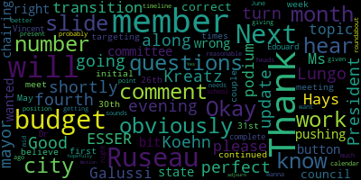
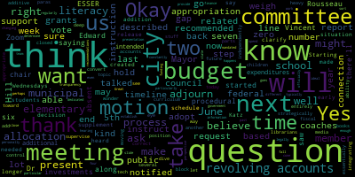
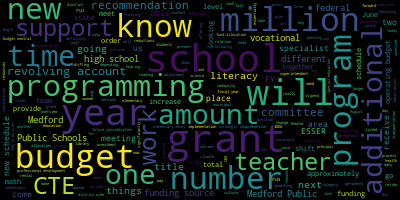
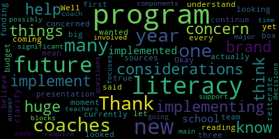
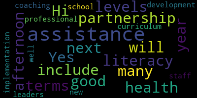
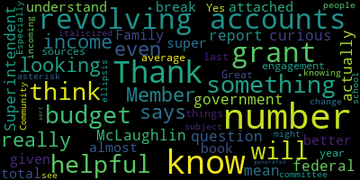

[Lungo-Koehn]: member Kreatz, member Ruseau, he will be along shortly and mayor Lungo-Koehn. President, can you hear me?
[Graham]: Yes, thank you. All present, and member Rousseau is also on Zoom. So all present, six, seven, present, zero, absent. Before we get started, just a procedural question. Dr. Edward-Vincent, do you want us to hold all of our questions until the end, or do you want us to ask questions as we go along?
[Edouard-Vincent]: I would love to be able to go all the way through.
[Lungo-Koehn]: Okay, perfect. So I will turn it over to you. Good evening.
[Edouard-Vincent]: I look forward to presenting the budget slide deck to you.
[Lungo-Koehn]: Thank you. So this is our fourth budget update. Next slide.
[Edouard-Vincent]: So as I begin this evening's presentation, I wanted to share the Medford Public Schools funding sources. There are four areas where we receive as a district funding sources. There's the operating budget from the municipality, which is approximately 81%, We receive grants, such as IDA, and our title grants, which amount to 12% answer, which was a one time funding source 2% and revolving accounts, which account for 6%. These percentages are representative of fiscal year 22 spending. So I just wanted to qualify those percentages, but to let you know that there are multiple funding sources that contribute to the Medford Public Schools budget. So for funding sources, Medford public schools operating budget is funded by the city of Medford general fund allocation. This amount is comprised of the chapter 70 state aid plus state determined minimum required local contribution. The city contemplates all available financial resources and provides a general fund allocation to Medford public schools. The state defines net school spending as the minimum amount a community must spend on education. Medford has historically allocated substantially in excess of the net school spending minimum amount. In addition, Medford Public Schools receives federal and state grants for its educational purposes. The total fund allocation is historically comprised as follows. 20% of funding comes from the Commonwealth. That's our chapter 70 allocation for education, our local aid and circuit breaker. 5% comes from the federal government. The federal government funding often includes or comes in the forms of the special grants which I mentioned earlier title one title for ID a food service, etc. These grants are not part of the general fund allocation and are separately managed. 75% of our funding comes from the city of Medford. It comes from a general miscellaneous revenue, which does include property taxes, meals and hotel taxes, excise taxes, and the like. So thus far with our budget process, the FY 24 process, today is May 15th, and today I will be presenting the superintendent's recommendations. Again, the remaining steps on this timeline, we started back in June, the strategic planning goals were approved, budget surveys took place during the month of March, Those surveys were for department heads district administrators school committee members to weigh in. We had budget meetings. And now today is the recommendation, our next meeting on June 5 will also be the school committee requests to the municipal government. And sometime in June will be the municipal appropriation and the school committee adopting the budget that meets the appropriation. And as of July 1st is the official implementation of the new budget, the new fiscal year. So our budget objectives today for May 15th will be the superintendent's recommendations on the strategic priorities of Medford Public Schools. So our FY23 budget numbers. The Medford Public Schools adopted operating budget, which was approved in June, was $69,294,776. As we move forward, And as I frame the district's priorities and present my recommendations, I want us to keep in mind what is Medford's future. The aim of the Medford Public Schools is to equip our students higher education and professional pursuits. This objective is the driving force behind all of our efforts. So the key priorities for school year 23-24 are going to fall into four categories, which are aligned to our strategic plan, the ACEs. Regarding achievement collaboration, equity and safety and support. So stabilization is one of our key priorities. We're going to focus on the culture and climate district wide. stabilize operations at Medford High School, plan for integrated scheduling at Medford High School for the 24-25 school year, in addition to the new schedule that will also be implemented this year for our elementary schools, which will no longer be having the early release Wednesdays, but a different schedule. Under the bucket of curriculum and instruction, This year, we will be implementing new programming in literacy to fully integrate the science of reading. And that presentation will be coming to the committee by next month. In addition to a new literacy program that will be chosen is a new health program. And there have been many, many meetings with the HECAT team. So we'll be looking forward to hearing what their recommendations are as well. And again, this is to provide enhanced offerings for our students. Our third category is recommitting to the arts with the integration of an art rotation in the traditional CTE programming. So this is the programming that takes place in our vocational, with our vocational programming, vocational programs. CTE stands for career technical education. And this year, For grade nine, we will be introducing the fine arts in a theater, theater instruction, taking place this year. So, again, it's going to be enhanced offerings. In addition to the, the, the vocational offerings that students normally receive. The fourth category is going to be expanded CTE, which is, again, growing our CTE programming and expanding to meet the Medford demand, which is ever increasing. Some of our key priorities, again, similar to what you saw in the previous slide, just presented differently. The categories, strategic staffing investments, focused on our most vulnerable learners, literacy interventionists, social workers, adjustment Councilors, the theater teacher, CTE expansion, occupational therapy, and speech and language services. Professional development and training is going to be critically important, especially for the new programming that we plan on bringing on for next year. We will be offering building-based professional development, district-wide professional development, looking at restorative practices, responsive classroom, and continued training in the new literacy program and continued training in math, because those are both new programs at the elementary levels. Summer programming again grant dependent, but we are definitely moving forward this summer with fine arts, to add to our traditional array of summer programming options for our students. And the fourth category is miscellaneous departmental supplements. Again, as I mentioned earlier, it's critically important. Our high school. We have two different schedules, six day rotation on the comprehensive side of the high school. and a five day rotation on the vocational side, and we need to carefully merge the two different schedules so that we will be able to maximize offerings for all of our students. and consideration for our elementary new schedule in order to provide the maximum amount of teacher time together, common planning time, grade level team meetings. We needed to add an additional 4.0 specialists in order to make the new schedule work and in order for us to be in compliance with our new CBA. So that's just the historical overview of what the superintendent's key priorities are. And so we're gonna move into the operating budget. And as I transition to the operating budget, I will begin with what the superintendent's budget recommendation is for the next school year, 23-24 school year. The recommendation that I'm putting before the committee this evening is 71,835,165. This new number reflects comprehensive budget review, following meetings with principals, directors, senior leadership, really, really looking at anywhere where we could bring about savings and seek other sources, financial sources to make our budget work. Here I have a list of some of our fixed cost increases that are expected for next year. Under the line item of salary and personnel, we're expecting a fixed cost increase of approximately $2.7 million. This number includes the six completed CBAs and presents 2% for the remaining CBAs and non-unit personnel. And we have special education, transportation, maintenance, and athletics. Here is another way to review the FY24 to maintain level services. So for salary and personnel, as I discussed just on the previous slide, there's a $2.7 million increase. So in FY23, it was $56.7 million. And for next year, it's going to be approximately $59.4 million. Out of district tuition, for FY23, it was 3.7 million, and for FY24, we are expecting it to be $4.2 million. For school bus transportation, FY23 was approximately 1.2 million, and that anticipated increase is 1.25 million for FY24. for utilities and gas 1.85 million for FY 23 expected 2 million for FY 24. Our outside cleaning contract, I gave the historical overview of 400,000 in fiscal year 22, 445,000 is FY23. And we are anticipating 45 to a $50,000 increase for FY24. And for our specialized transportation which is our van special education vans we are expecting an increase there from 1.5 million to 2.2 million. So for our operating budget reductions. We really took time to look at budget identify areas where we could make reductions, and we have approximately $772,000. identified as reductions thus far for the 23-24 school year. That includes things such as a double head count when there was a leave of absence, necessary reductions in positions due to lower enrollment, cancellations of unnecessary technology platforms that might have been relevant during the pandemic but right now we're not having, you know, significant user subscription use. So that amounted to $772,000. are recommended investments. So implementation of the Medford High School climate recommendations to help support and provide guidance under a different structure. It will essentially be a budget neutral shift But we, we want to move forward with implementing those climate recommendations for literacy where we are going to be approving a new literacy core program and continuing our work with the science of reading shift. as well as to provide embedded professional development, mentoring and coaching, assisting our educators and school leaders with data tracking and analysis. We are asking for one to two coaches with a possibility of an adjustment of 80 to $160,000. In our PIC, our parent registration Center we would like to maintain the current level of service with one additional registration specialists, totaling 50,000. We would like to convert our library aids to librarians. to establish a library media position that will incorporate maker space investments and simultaneously ensure calming planning time at the elementary level with the new schedule. So we're thinking that approximate amount. And then, again, adding. 1.0 theater teacher to support our freshmen rotation with CTE during the CTE rotation at the high school. That was a $70,000 recommended investment. Future considerations. These are things that are not included in allocation but our future considerations that. We have identified as areas in math, because we know that we still would like to continue that work in the providing additional support to teachers to provide additional coaching support in mathematics. Providing additional coaching supportive, if possible, at the elementary schools. If, if this this again was a future consideration. Some curriculum resources zaner blows are. Additional professional development on math differentiation, adding well padding for the middle school gyms stipends for the fifth grade Olympics under fine arts. additional art supplies, a lead teacher stipends for under guidance and counseling to support the exam coordination, AP exam coordination, a lead teacher stipend and safety care coordination. professional development and science additional staffing in vocational programming finance, an additional halftime position to support our human resources department. Some restoration of supply budget in science and. classroom screen monitoring. So that's another area that we listed as future considerations.
[Lungo-Koehn]: We're going to transition to ESSER. Next slide, please.
[Edouard-Vincent]: For ESSER, on this slide, It just shows the three so grants and the total that we received. So one was 668,052. So two was 2,372,520, and so three was 5,309,620. So, again, our total so funding that we've received over the course of the, when the pandemic took place was $8,350,192. We have approximately remaining at this point in time. $3.2 million in ESSER funding to date. However, that number will be changing. So the key investments for ESSER Several of them that are listed here master scheduling consultant. We need to bring in an expert to support that work at the high school level, the culture and climate RFP to support culture and climate district wide, and that money was allocated by the school committee. CTE materials and supplies required for the continual implementation of our current programs is 185,000. And then elementary literacy, district-wide health, we're gonna be looking at ESSER and grant sources. That total amount is to be determined because we don't have a hard number just yet. Additional proposed ESSER funding on that slide is showing personnel, 1.3 million. This includes adjustment Councilors, behavior specialists, re-engagement specialists, ELL newcomer teachers, instructional support staff. EL support, 25,000. COVID-related one-time stipends, 800,000. Personal development and subscriptions, care for literacy, restorative justice, bystander interventions, counseling programs, talking points, other subscriptions district-wide. The MBTA PASS program, which has cost us $200,000. And this number has increased significantly since we started, and we are reviewing that number. But the estimated total of ESSER spending this year is in the vicinity of $2,675,000 by year's end. That would leave us with an ESSER balance of $525,000. And again, this is the amount that is reserved for FY25. This amount can be reduced due to an unforeseen expenditure. The next portion of the presentation that I'm gonna bring us to is just give an overview is on our grants and revolving accounts. What I've done is I've listed, I've listed some of our key grants and our revolving accounts. So we receive grants from the state and from the federal government. We receive comprehensive health coordinated family community engagement hate crimes prevention, special education circuit breaker. Those are significantly large grants that are awarded to us from the state. And the following are key federal grants, IDEA, our special education preschool program, Title I, Title IIA, Title III, Title IV, and we receive Perkins federal grant for vocational CTE program programming, which is our Perkins grant. And then we have several revolving accounts. And those revolving accounts, related to vocational programming CTE programming, things such as such as the rental of our field of dreams. by community partners we have community schools. We have kids corner as a revolving account we have our before and after schools program, and we have drivers ed, so there are multiple revolving accounts. And again, both tables represent a selection of the grants and revolving accounts. These amounts are subject to change and numbers can fluctuate, depending on new grant program initiatives. So I did not list, sir, which was a federal grant opera, which was also a federal grant, because those grants are ending in FY 25, but those are also additional funding sources. And so this concludes my presentation to the committee. And I just wanna say thank you for listening to me and I am ready for questions.
[Lungo-Koehn]: Thank you. Member Hays.
[Hays]: Thank you. Thank you for the presentation. So I wanted to clarify or to understand more the under future considerations, what does future considerations mean does that looking at other funding sources for this coming year or future as in future years.
[Edouard-Vincent]: I think it's a, it is a combination of both future considerations are things that we can continue to do at another point in time, and if we are able to use different funding sources, then we could potentially. cover them through using a different funding source. So we might be able to cover some things using a revolving account if it's a one-time expense. So there are some things that we can try to maneuver and we would be able to do that. And then there are some other things that would have to be in future fiscal years.
[Hays]: Can I continue? So can you then let me know, at this moment, how many reading coaches or literacy coaches to help implement the new program? How many are actually in this budget currently?
[Edouard-Vincent]: We currently have one official coaching and any member of the team. We have two coaches that are, two literacy coaches that are officially in the official allocation.
[Hays]: Okay, I would just like to reiterate I've said this before, I am very concerned that implementing a brand new huge literacy program the first one in more than 10 years I believe that not having coaches at each of the schools to help implement the new program. I think is a huge concern. It's a, it's a big program. Well, we don't know which one yet. I have been on the team. I've looked at all three programs as is true of every box literacy program out there. There are so many components involved and there's going to have to be some significant decisions made about how things get implemented and possibly which things don't get implemented because they, they require more time than we have in our literacy blocks. and to not have a coach at each school there to support the teachers, answer their questions, I think is a major concern when we're implementing a brand new program when literacy is one of our main focuses. Thank you.
[Edouard-Vincent]: Thank you.
[Graham]: If I may, from the chair, can I just ask a question that is related? So in the recommended investments, we're saying there'll be two literacy coaches. And then I also saw in the ESSER expenditures, additional support from Hill for literacy. Is the support from Hill intended to supplement the two coaches that are being recommended?
[Galusi]: Hi, good afternoon. Yes, and so the partnership with health literacy for next year will include many levels in terms of professional development, assistance with implementation of the new curriculum, as well as coaching assistance for staff and the school leaders.
[Lungo-Koehn]: Thank you. Are there any other questions for Ms. Galussi while she's at the podium about this topic? Okay, thank you. Are there other questions from the committee? Member Ruseau? I'm pushing the wrong button.
[yB-9Wmg_zjs_SPEAKER_00]: After years, I still push the wrong button, sorry. Based on what's in ESSER spending now, we can safely predict that next year's budget, which will go up, fixed costs will go up as they do every year. And we will not be able to get rid of, for instance, ELL newcomer teachers, like they're in the ESSER funding right now, those are not optional teachers, they will come on to the non-grant based budget. And so has there been a prediction already prepared for next year on the minimum increase that will have to happen, which will far exceed this year's number so that the mayor and city council can decide whether to act on an override prior to it being too late, because I think after January 1st of 2024, an override that is approved will not help us fix our budget for June of 2024. So if they don't act, assuming that they need more money, which seems like a fairly safe bet, if they do not act by December 31st and we have an override vote and it's approved, We are looking at a, a increase next time around that will dwarf any increase we've ever had. So, are we making sure the mayor knows that, so that we can start having that conversation because I mean I'm not thrilled by this budget, but what I see is 2.7 something million dollars and Esther spending, almost none of which we just think we want to get rid of next June of 2024, which we will definitely have to get rid of, unless somebody does something to prepare the city for having more funding. I'm not sure there's an answer, but I would hope that that conversation is happening between the superintendent and the mayor, so that the mayor isn't surprised next year, and none of us should be surprised next year. We have a whole slide of all the stuff that we definitely cannot afford on July 1 of 2024. There's no scenario where we can afford those positions. So short of a billionaire riding in on a white horse, we have a nearly one year view of a train wreck coming. So I just wanna make sure, this body cannot increase taxes as everybody in the room knows. and many of the people who are watching, we cannot affect having more revenue, but it's not within our authority. So I'm really grateful for that slide because it's really important to know that we are one year away from a full-blown train wreck. and this body can do nothing about it other than sound the alarms and make sure that the mayor and the city council give the voters an opportunity to say, you know what? We'd rather not have the train wreck and we'll do something about it, but this body cannot make that happen. So thank you for that slide. Frankly, it's the most important slide in my mind in the whole slide deck, because I think last meeting there was like 28 employees that are in that that essentially 28 people who work for us are in that slide. And when we talked about that in the last meeting, it wasn't that there was 28 people roaming the halls and doing work we don't need done was all important work some of its classroom teachers. So, I just feel like I've got a whole year of anxiety ahead of me about that one slide. And I just don't feel like there's anything that we can do about it other than raise the alarms. And I just feel like I'll be keep talking about this for the next while through December 31st when something could be done.
[Lungo-Koehn]: Thank you.
[Graham]: Are there other questions from the committee? member Katz.
[63m6ohF-DtU_SPEAKER_07]: Yes. Thank you for the update. And I just had a question and I'm trying to find it again in the presentation. It was about the climate. the climate study that was done by Mr. Welch. And I just wanted to know, because I know in his report, he mentioned, you know, there were various different titles, you know, a lot of them sound similar to some of the titles that we have, but they were just different titles. And I think it was in the section, I'm looking for it again, I just had it, and it said budget neutral. Here it is, okay. It's on page 16. So what does, It says from the general fund and then it says adjustment budget neutral. So what does that mean? Does that mean that, you know, we're going to, you know, kind of see, you know, how the budget is and then decide whether we can add from the general fund, maybe an add to staff if necessary. If you could explain that a little bit more, thank you.
[Edouard-Vincent]: So the the budget neutral. I'm looking at the recommendations that were made in his report, and looking at the current structure that we have in place. some of the exact personnel, but shifting the structure of the high school, it ends up essentially being a budget neutral, repurposing and shifting some of our human resources that are there. So it is something that we really sat down, looked at, and realized we could go with a new structure. And it essentially would be budget neutral, there would be very limited, it would just be a reorganization of the structure that we currently have in place.
[63m6ohF-DtU_SPEAKER_07]: So, in this budget, we don't actually have a figure because it's going to be just like a reorganization with what we currently have. Yes, that's why there's no dollar value. Thank you. And then, and then I just had a question about the extended day. You know, I was on the call with Mr. Murphy, and I had asked him some questions about that because I was really, I was unaware, I guess when the contract when we settled the contract that we were going to have to create, you know, a total of four new positions. So, you know, what we talked about was, you know, is there going to be like an opportunity for some of our existing employees, you know, who might not be full time, you know, to increase their daily schedule, and, you know, possibly change the title of their position, you know, so that they could work like something like in the library like media literacy in the students would then have another class where they could engage in additional you know studies, but in media literacy, you know that was just something that you know you know we had discussed during we had a was like a. Office hours. Yep, that's what it was called.
[Edouard-Vincent]: So, the, the, the shift from library Paris to librarians and having it, you know, eventually shift toward media technology that's like a longer, a longer term. but we needed to have at the elementary level, we needed to add an additional specialist at each school in order for the new schedule to work. And in order to create common planning time, grade level team meetings for the teachers to have the opportunity to work together, to collaborate together, to look at data, To review, you know, all of those things, it needed to take place by creating a new schedule, and the only way that new schedule could be created was to add a specialist, the, the elementary schedule is significantly different than how the 612. secondary schedule works, because again at the secondary level, all teachers are content area specialists. So, all the math teachers always meet, you know, in a math team or they can meet together that way or they meet by a cluster, but at the elementary level, the teachers are experts in every single area because they teach reading math science social studies history, you know spelling penmanship, they teach all of every single content area. So they need that time as well to be able to work together and further their practice. So that was definitely a high priority for us to be able to have that and to give them that time by giving them the half day early release as opposed to the, you know, 45 minutes or 35 minutes when they had the previous schedule of the early release Wednesdays, when it was all said and done. So that that was like something that was necessary in order to really give them that opportunity to work and collaborate together as professionals.
[63m6ohF-DtU_SPEAKER_07]: Thank you. That's all I have right now. Thank you.
[Graham]: So if I might just clarify what I think I heard you just say. Starting next year, the elementary students will no longer have a 1.30 early release.
[Edouard-Vincent]: On Wednesdays.
[Graham]: On Wednesdays. And in doing that, it created a situation where there needed to be an addition of instruction of some kind to the elementary schedule. And the decision that you all have made strategically is that the right way to add another block of instruction is to take our paras who don't instruct today and convert that position so that they are librarians who can both supervise children independently and instruct. And so it would be like essentially additive to the literacy curriculum with an eye toward like that future that you described of integrating media, tech, all of that stuff, which I think you see in other elementary schools. Is that correct? Like that is the connection?
[Edouard-Vincent]: That's the connection.
[Graham]: Thank you.
[McLaughlin]: Member McLaughlin. Thank you. Thank you for the report, Superintendent. I had a question just looking at looking at grants and revolving accounts at 18% of the budget and grants at 5% or I mean at the revolving accounts at 6% which is more than the federal government actually I'm curious if we can get numbers for the for the grants and the revolving accounts, just to know you know what the numbers are attached to those because I think it would be super helpful for me to better understand what those are given that again they're almost 20% of the total budget.
[Edouard-Vincent]: So when the budget book is completed, all of the grants are inside the final version. The formal grants are inside the actual budget book. So as it's being built, it will show IDEA, it will show that that one was for FY22, the total was 1.2 million. You know, title one reading for FY 22, it was 712,000. So, You know that the grants are a significant amount, but some of the grants to change the, the SR three was 5 million so that you know that was one year but it was 5 million added next year. That number will be there in the overall so it does, it does shift from from year to year. So,
[McLaughlin]: So in the budget book will have a break.
[Edouard-Vincent]: Yes.
[McLaughlin]: Family engagement grant will have a number. Yes, all those things will have a number. Great.
[Edouard-Vincent]: Yes, exactly.
[McLaughlin]: We get the same for the 6% on the revolving accounts.
[Edouard-Vincent]: Yeah, we can definitely, that number fluctuates. So with the revolving accounts, with CTE programming, for example, where we have nine different programs and the restaurants are starting to kick off and some of those things, the number may shift. When Edgerly Field is rented, what is that? We have the rental, for example, The Japanese language school, they are our largest rental that comes in, but that all goes into like the bucket of community schools. So we can definitely try to get more information, but the numbers change. You could have a rental and then someone finds another location and you were thinking that you were gonna have a certain amount coming in and now they're renting elsewhere. So then you have to subtract that. MEEP programming is a revolving account. It depends on how many, you know, families choose to send their child to that preschool program. Some families choose to use other vendors, other preschool providers. So that changes from year to year. So that was kind of why I was saying it's a fluctuating number. You can have an idea, a pretty good guesstimate, but those numbers do change. They go up, they go down, depending on what's happening at that point in time.
[McLaughlin]: Thank you. I just think it would be really helpful to know the sources of that income and just, again, an average or even the last year's numbers or something with an even italicized ellipsis or something that says, You know, or asterisk or something that says you know these numbers might be subject to change, but just knowing. Especially for incoming you know school committee members and for the Community and other people to see where that income is generated and sort of where the numbers, I think that would be really helpful, thank you, thank you.
[Graham]: On that topic of revolving accounts, I think we've we've talked about this several times, and I know that there's a. heavy connection between our ability to like report on revolving accounts and how the fiscal year ends and how the books get closed, not only for schools, but for the city as well. So I wonder if you could think about a time when it would be appropriate for us to do a deep dive into the revolving accounts based on, based on all of those moving parts, which I know are not entirely in your control and let us know when you might be able to do a presentation dedicated to the revolving accounts, particularly because I know there's just a lot of there's a lot that goes in and out of those accounts and it is constantly changing, but also. I know that this the city's finance team has to work with you to provide some of that information, so I want to make sure there's enough time to do that well. Because we haven't had that kind of transparency in the past, but perhaps you can just think about what that timeline would be of when we could get a report like that, even in the fall. I don't think it, I don't personally think it has to be right now, but I think if we could establish a process where that happens regularly, that would be ideal.
[Edouard-Vincent]: Yeah, I can definitely work with that fall timeline because I know as the year is going to come to a close, there's probably going to be a lot of, you know, shifting and moving parts. So I can take note of that to be able to to present something like that in the fall as the new school year starts.
[Graham]: Okay. The other question that I had, I think, related to the federal grants in particular, when do we typically get notified of our allocations for all of those federal grants? Is it in line with how we are notified about state funding or is the timeline different?
[Edouard-Vincent]: So for FY, our title grants, normally it's August, and I can defer to Joan or Suzanne, they're nodding yes, that it's August of the next, so we will already be in FY 24 when we find out the allocation. But sometimes they go up, sometimes they go down a little bit, depending, and we don't know until August when we get the official allocation.
[Graham]: Okay, thank you. Are there other questions from the committee? The only other question that I had was about next steps. So if I go back to slide four, at our next meeting on June 5th, the school committee will take a vote to make its request to the municipal government. Is that also the meeting where we will hold our officially and legally mandated public hearing for the public to come and weigh in on the budget as it has been described?
[Edouard-Vincent]: Yes, so what I can do is send a communication to the committee to see if we can do the public hearing on June 5, and the school committee requests to the municipal government. So if we're, I'll try to send a doodle poll or coordinate with the entire committee to see when we can have that because We need to post the budget hearing two weeks in advance just to make sure that we're following the rules.
[Graham]: Great. And then the other sort of next step, I think, from our perspective is that we also will have to determine how to spend the municipal appropriation. And so I think in the last meeting, we talked about some recommendations from all of you about what it would take to close the gap between what is 71, 835, 165 and the municipal allocation, which I believe stands at $71 million right now. So at some point on June 5th, do we also plan to have a discussion about closing that gap and what your thoughts are on how we might do that?
[Edouard-Vincent]: At the June 5th meeting?
[Graham]: I think that's the question is when would we do that? I know we have TBDs on here, but we do only have two more meetings. So I just wanted us to think through and make sure that the committee can weigh in on that as well.
[Edouard-Vincent]: We will begin the process with my team. We'll be working on trying to meet to see how we can get to that number.
[Graham]: Okay. And then by our by our last meeting in June, which I believe is the 12th, I think we would ideally be able to adopt a budget number that meets the city's appropriation. I know the city budget is not out yet. I believe that's coming. in the next couple of weeks. And so the city council's budget process will start at that time. And I know we try our best to line up to that, but I just want to be mindful that we will likely have to take two votes. One to request the 71-8, assuming the committee doesn't have any significant changes to that number. next week, and then finally on how to adopt the city's allocation, whatever that may be when the Council ultimately approves a budget. And I know their process is just getting going. Okay. Are there any other questions about the budget? Mayor, did you want to speak?
[Lungo-Koehn]: No, thank you for chairing. I'll be right in a bit. I just wanted to state that's correct. The city council will get the budget. We're targeting May 26th, then their first initial meeting will be, I believe the 30th, continued by the 31st, and they'll meet a couple of times each week until it's complete. Dr. Edouard-Vincent, you probably want to get on that calendar for mid June on a night that works for you to present your budget and just giving you the heads up on that. But the timeline sounds reasonable to me. And I can comment just to, I know member Ruseau, I did hear some of the comments. So I just wanna point out that the 71.8 is obviously a much better position than the number, the roundabout number we were given about a month ago. So I know that there's needs in the school, obviously in the city, but we're getting there and hopefully we can work through this over the next month or so.
[Graham]: Thank you for that. If there are no other questions, I will wait for a motion to adjourn. Sorry, if there are no other questions, I will ask for a motion to adjourn.
[Lungo-Koehn]: Motion to adjourn.
[Graham]: Motion to adjourn by Member McLaughlin, seconded by Mayor Lungo-Koehn. Roll call.
[yB-9Wmg_zjs_SPEAKER_00]: Let me imagine the list that I don't have written down in my head. Member Graham.
[Graham]: Yes.
[yB-9Wmg_zjs_SPEAKER_00]: Member Hays. Member Kreatz?
[Graham]: Yes.
[yB-9Wmg_zjs_SPEAKER_00]: Member McLaughlin?
[Graham]: Yes.
[yB-9Wmg_zjs_SPEAKER_00]: Member Mustone? Yes. Member Rossell? Yes. Mayor Lungo-Kirk?
[Lungo-Koehn]: Yes.
[Graham]: Seven in the affirmative, zero in the negative. Motion passes. The meeting is adjourned. We'll be back here at 6pm for our
|
total time: 2.42 minutes total words: 265  |
total time: 6.57 minutes total words: 1019  |
total time: 34.68 minutes total words: 3559  |
total time: 1.57 minutes total words: 247  |
|
total time: 0.38 minutes total words: 41  |
total time: 1.32 minutes total words: 237  |
||
{kind=link}
{kind=link}
{kind=link}
{kind=link}
{kind=link}
{kind=link}